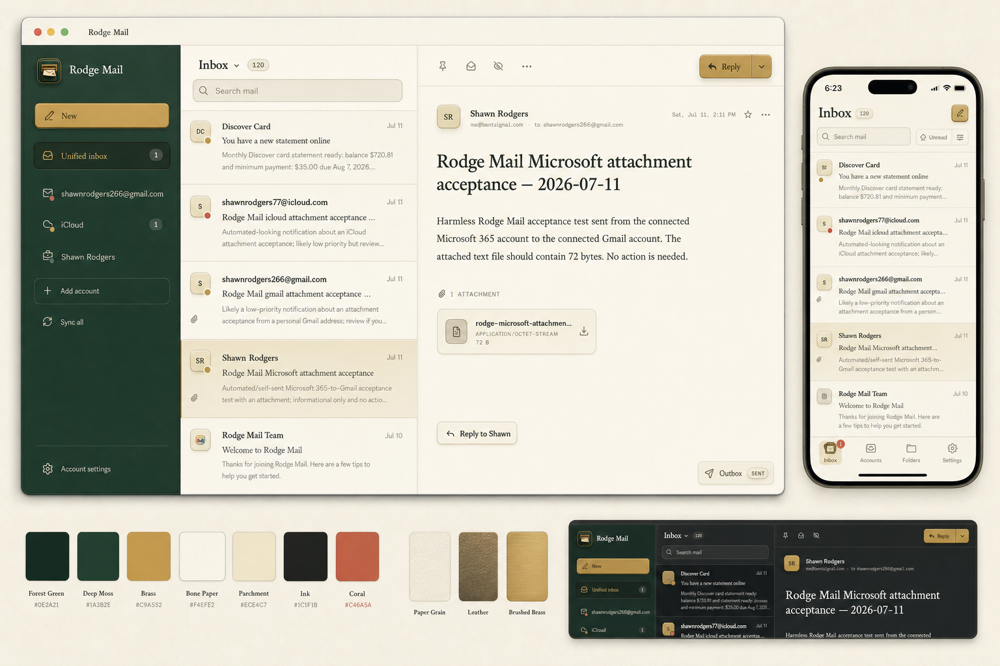
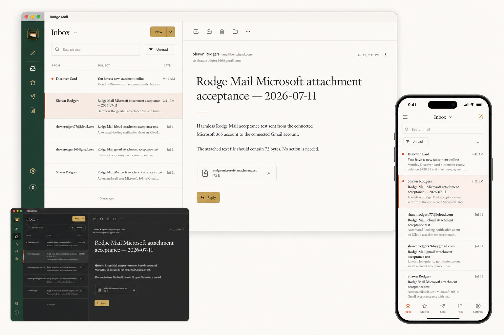
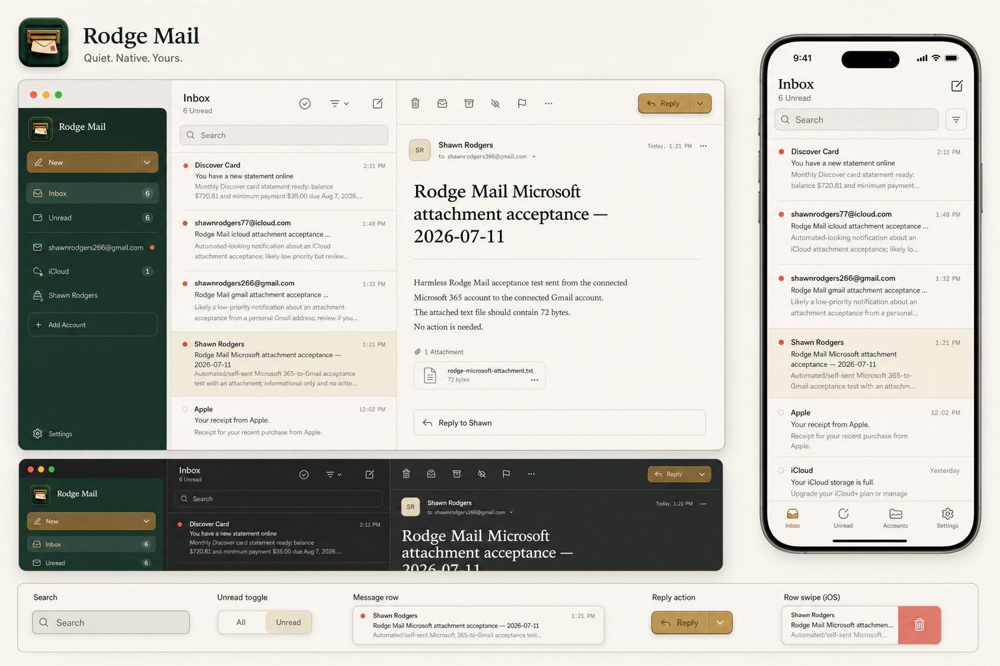
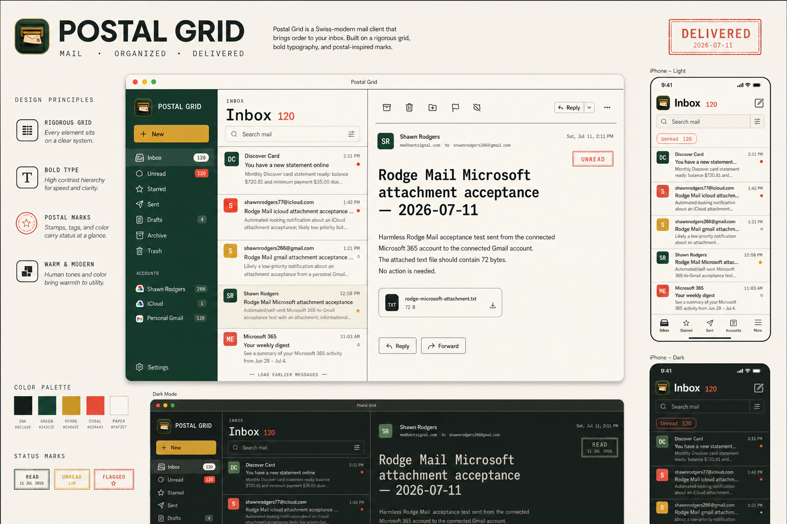
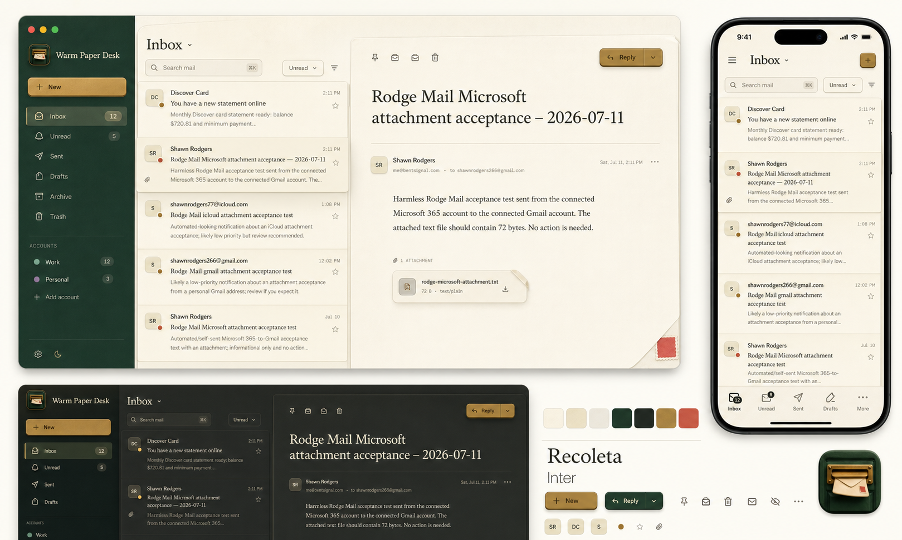
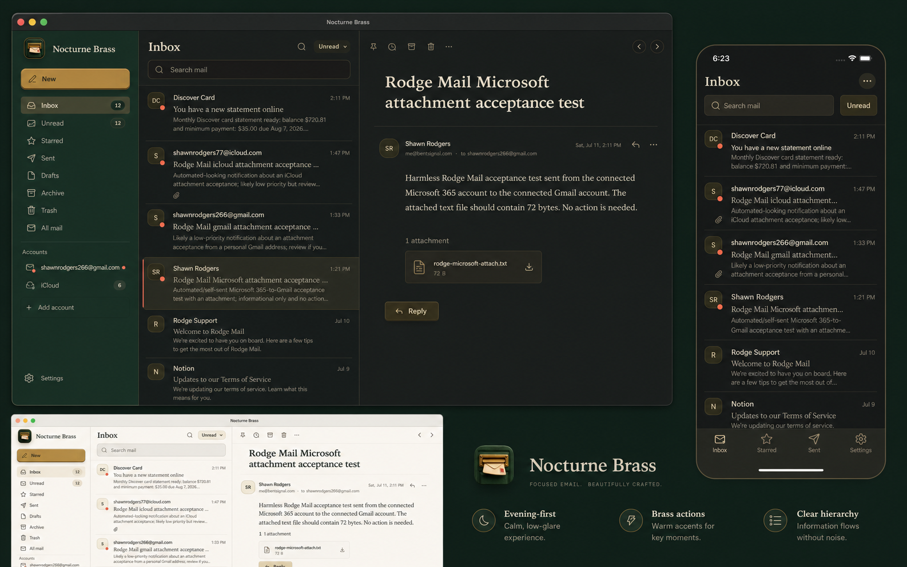

01
Tactile Atelier
The strongest continuation of the icon: bookbinding, paper grain, and machined brass, kept disciplined enough for daily use.
Image-model explorations grounded in the selected clay mail-slot icon and the live desktop and mobile interfaces. These are design targets, not production screenshots or palette swaps.

The strongest continuation of the icon: bookbinding, paper grain, and machined brass, kept disciplined enough for daily use.

A print-journal reading experience: rigorous typography, almost no cards, asymmetric hierarchy, and a narrow brand rail.

The least themed option: macOS and iOS conventions do most of the work, while the mail-slot icon and restrained accents carry identity.

Swiss postal graphics translated into a productive interface: crisp rules, stamped status, bolder color fields, and very clear density.

The most openly skeuomorphic direction: shallow paper layers, folded corners, archival folders, and a credible night mode.

Dark-mode-first, typographic, and focused. Forest becomes a narrow account layer; charcoal does the heavy lifting; brass marks actions.
Keep the canonical master untouched. For the shipping app icon, use the existing close crop as the starting point and zoom another 4–6%, full bleed, with no baked rounded rectangle or dark outer frame. Let iOS and macOS apply their own mask. Verify the 60 px rendering on-device before replacing every generated size.
Use the isolated transparent mail-slot cutout, not the square source,
over one flat native splash color. Size it around 112–128 points on
iPhone and avoid a second card, border, shadow plate, or background baked
into the image. The repo’s apps/mobile/assets/splash-icon.png
is the correct asset form; the runtime configuration should display it
directly.